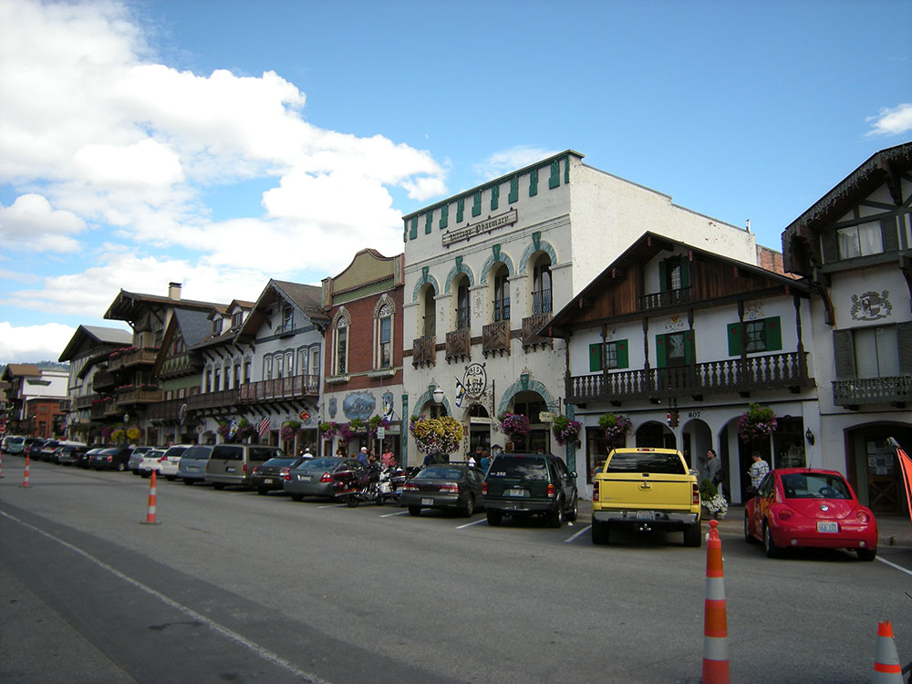
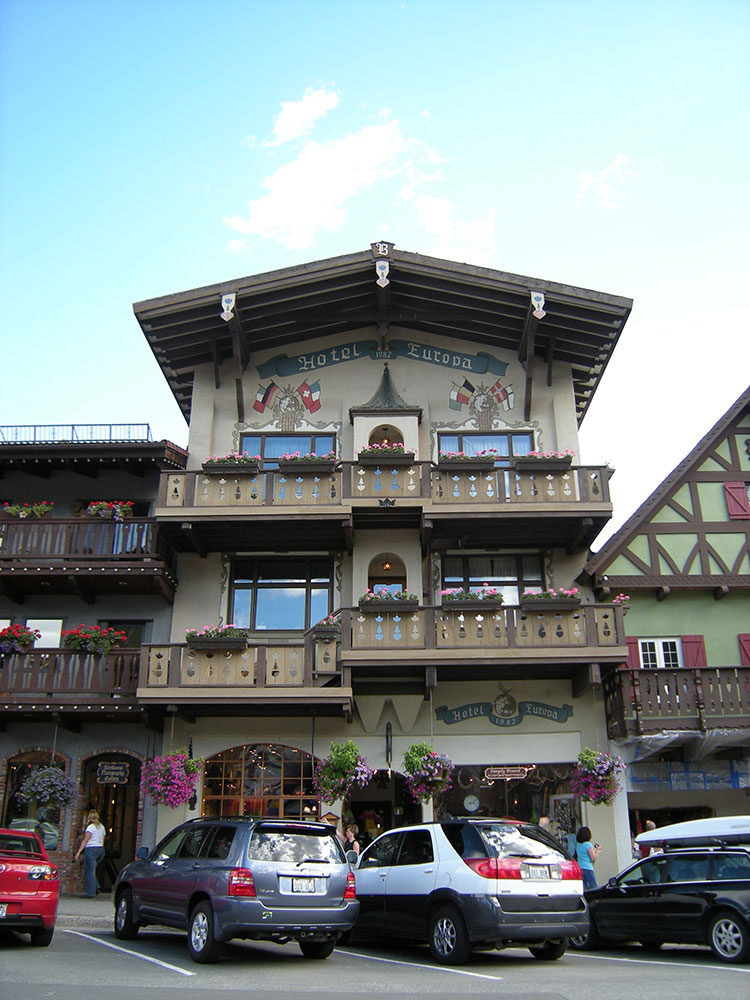
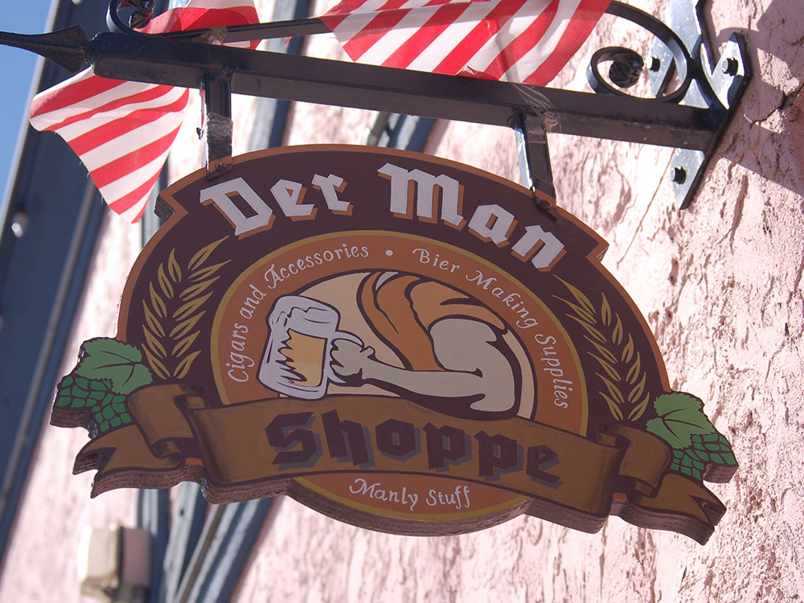
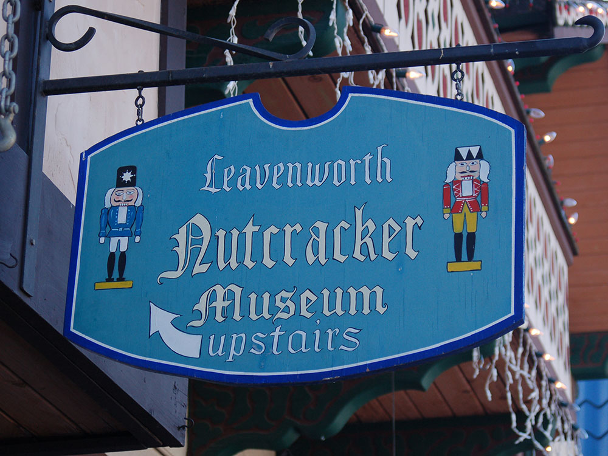

City in Washington known for the entire town center modeled on a German Bavarian village as part of a civic initiative that began in the 1960s
General Information
How to Get There
Overview
Leavenworth is a small town in the Cascade Mountains of central Washington, on the Wenatchee River, and it is famous for being transformed into a Bavarian-style village, with Alpine-style buildings, flower boxes, and German food and festivals. Surrounded by snow-capped peaks, the town of about 2,000 people attracts more than a million visitors a year for its Oktoberfest, its Christmas Lighting Festival, and its hiking, skiing, and rafting. It is a popular getaway for visitors from Seattle, about 120 miles to the west.
Visitors come to Leavenworth for the Bavarian-themed downtown with its shops, restaurants, and beer halls, and for Oktoberfest in September and October. They also come for the Christmas Lighting Festival in December, the Nutcracker Museum, and for outdoor activities such as hiking in the Alpine Lakes Wilderness, rafting the Wenatchee River, and skiing at Stevens Pass.
History
The Wenatchi people lived in the area, and the town was settled in the 1890s and named for Captain Charles Leavenworth, a railroad investor. The Great Northern Railway made Leavenworth a division point and a lumber town, and it prospered until the railroad moved its operations to Wenatchee in 1925, and the sawmill closed in 1957. In the early 1960s, local business leaders, facing decline, developed a plan to rebuild the town in a Bavarian style to attract tourism, which was inspired by the town of Solvang, California. The first Maifest was held in 1962, and the Bavarian village has flourished since.
Sightseeing and Popular Landmarks
Front Street is the main street, lined with Bavarian-style buildings, a gazebo in Town Square, and the Leavenworth Nutcracker Museum, which has more than 7,000 nutcrackers. The Leavenworth Reindeer Farm lets visitors feed reindeer, and the Leavenworth Sleigh Rides are popular in winter. The Wenatchee River offers rafting and tubing, and the Icicle Creek Canyon has trails and waterfalls.
Culture and Museums
Leavenworth's culture is expressed through festivals: Maifest in May, with a maypole dance, Oktoberfest in the fall, the Christmas Lighting Festival in December, with thousands of lights, and the Autumn Leaf Festival in September and October. The Nutcracker Museum, the Leavenworth Summer Theater, and the Icicle Creek Center for the Arts, which hosts music, add to the entertainment. German food, such as bratwurst and pretzels, and local beer and wine are central to the experience.
Parks
The Alpine Lakes Wilderness, accessible from Leavenworth, has the Enchantments, a famous area of alpine lakes and granite peaks, with a permit lottery for overnight use, and Icicle Creek and Tumwater Canyon are popular for hiking and rafting. Waterfront Park has trails along the Wenatchee River, and Lake Wenatchee State Park has swimming and camping. Stevens Pass Ski Area is about 35 miles west.
Seasons and Weather
Leavenworth has a warm-summer continental climate, drier than the western side of the Cascades. Summers are warm and dry, with highs in the 80s and 90s°F, and winters are cold and snowy, with highs in the 30s°F and about 70 inches of snow. Fall and Christmas are the busiest seasons, and summer wildfire smoke can occur.
Things to Do
Experience Washington's Bavarian Village
Leavenworth is one of the Pacific Northwest's most distinctive destinations, known for its Bavarian-inspired architecture, alpine scenery, outdoor recreation, and year-round festivals. Nestled in the Cascade Mountains along the Wenatchee River, the town offers visitors a unique blend of German-inspired culture and Washington wilderness.
Explore Downtown Leavenworth
Downtown Leavenworth features charming Bavarian-style buildings, specialty shops, beer gardens, wineries, restaurants, bakeries, and art galleries. Visitors can stroll through the pedestrian-friendly village while enjoying mountain views, German-inspired cuisine, and seasonal events that bring the town to life throughout the year.
Visit Waterfront Park
Located just steps from downtown, Waterfront Park offers peaceful walking trails along the Wenatchee River. Visitors can enjoy scenic river views, wildlife watching, picnic areas, and easy access to nature without leaving town.
Attend Seasonal Festivals and Events
Leavenworth is famous for its festivals, including Oktoberfest celebrations, Christmas Lighting events, summer concerts, and holiday markets. These events attract visitors from across the country and contribute to the town's festive atmosphere.
Enjoy Outdoor Recreation in the Cascade Mountains
The surrounding area provides exceptional opportunities for hiking, mountain biking, rock climbing, rafting, fishing, skiing, snowshoeing, and camping. Leavenworth serves as a gateway to the Okanogan-Wenatchee National Forest and the Alpine Lakes Wilderness.
Explore Icicle Canyon
Just south of town, Icicle Creek Canyon offers scenic drives, hiking trails, campgrounds, climbing routes, and dramatic mountain scenery. The canyon is one of the most popular recreation areas near Leavenworth and provides access to many of the region's best outdoor adventures.
Top Trails
Icicle Gorge Trail
Length: Approximately 4.2 miles loop
Elevation Gain: Minimal
Difficulty: Easy
One of the most popular hikes near Leavenworth, this scenic loop follows Icicle Creek through forests and riverside landscapes. The trail offers excellent views, interpretive signs, and opportunities for wildlife viewing.
Colchuck Lake Trail
Length: Approximately 8 miles round trip
Elevation Gain: Approximately 2,300 feet
Difficulty: Strenuous
This iconic hike leads to a stunning turquoise alpine lake surrounded by dramatic granite peaks in the Enchantments region. Colchuck Lake is considered one of Washington's premier hiking destinations.
Waterfront Park Trail
Length: Approximately 1.5 miles loop
Elevation Gain: Minimal
Difficulty: Easy
Located within walking distance of downtown, this family-friendly trail follows the Wenatchee River and provides a peaceful nature experience with mountain views, river access, and shaded forest sections.
Blackbird Island Trail
Length: Approximately 2 miles round trip
Elevation Gain: Minimal
Difficulty: Easy
This accessible trail system winds through forests and wetlands near downtown Leavenworth. Visitors can enjoy birdwatching, river views, and opportunities to observe local wildlife throughout the year.
This article uses material from Wikipedia as well as information from official tourism and institutional sources. Key references include Leavenworth Chamber of Commerce, Okanogan-Wenatchee National Forest, Washington State Tourism, Leavenworth Nutcracker Museum, and National Weather Service Spokane. Wikipedia material is from the article "Leavenworth, Washington", and is available under the Creative Commons Attribution-Share-Alike License 3.0.






